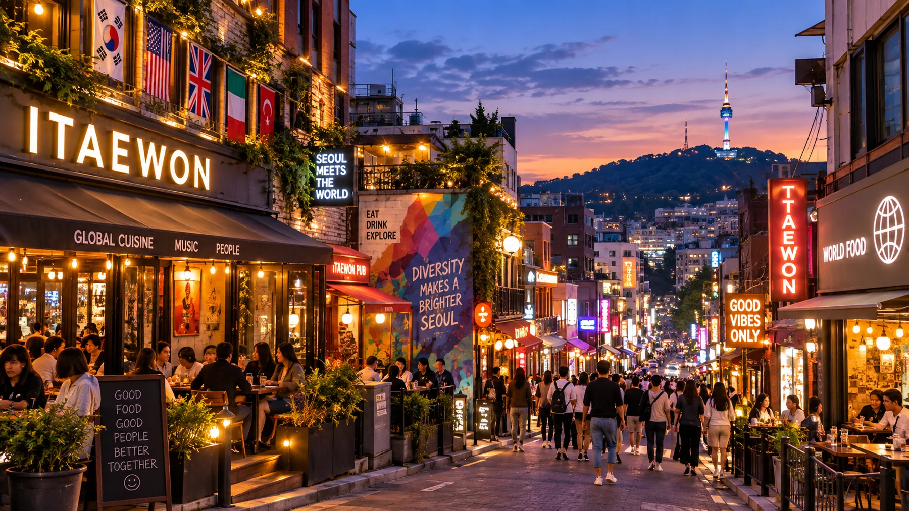

Guía de Itaewon 2026: Hannam, comida y vida nocturna

Itaewon tiene mucho más sentido cuando dejas de tratarlo como una sola calle.
Empieza por Hannam y Hangangjin si te interesan el arte, el diseño y las compras. Muévete después hacia el centro de Itaewon para comida internacional y servicios halal. Luego decide qué tipo de tarde-noche quieres de verdad: un bar más tranquilo alrededor de Gyeongnidan, una parada en la ladera de Haebangchon o la vida nocturna principal de Itaewon.
En un primer viaje corto centrado en palacios, barrios tradicionales y los grandes lugares de Seúl, Itaewon no es obligatorio. Para quienes valoran comida, arte, cultura internacional o las noches, puede cumplir un papel muy distinto de Myeongdong, Insadong o Hongdae.
Por qué Itaewon sigue mereciendo una visita
Itaewon suele reducirse a vida nocturna, pero eso es solo una parte.
El lado oriental, alrededor de Hannam y Hangangjin, encaja mejor con una tarde de arte, diseño y compras. El centro de Itaewon concentra restaurantes internacionales, servicios orientados a musulmanes y la mayor parte de la vida nocturna. Hacia el oeste, por Noksapyeong, Gyeongnidan y Haebangchon, las calles pasan a tener bares pequeños, cafés, restaurantes de barrio y un ritmo más lento.
Ese contraste es precisamente lo que hace que la zona merezca planificación.
Si solo quieres ver una calle comercial famosa, Itaewon puede parecer poca cosa. Si construyes la visita alrededor de una tarde y noche concretas, se entiende mucho mejor.
La decisión sencilla
Itaewon merece un lugar en el itinerario cuando al menos una de estas cosas te importa:
- Leeum Museum of Art o Hannam;
- comida internacional o halal;
- bares, clubes o conocer a otros viajeros por la noche;
- una tarde de barrio alrededor de Gyeongnidan o Haebangchon;
- ver un lado de Seúl menos centrado en palacios y turismo tradicional.
En un primer viaje muy corto, puede esperar si ninguna de estas prioridades encaja contigo.
Itaewon son realmente cuatro zonas distintas
La palabra “Itaewon” cubre más terreno del que muchos visitantes esperan.
Intentar caminar toda la zona como si fuera un único distrito comercial plano es donde empieza a fallar la planificación.
Hannam y Hangangjin
Utiliza este lado para Leeum Museum of Art, galerías, diseño, moda, showrooms y una tarde más pulida.
Es el mejor punto de inicio si quieres algo más que cena y vida nocturna.
Itaewon central
Es la zona alrededor de Itaewon Station.
Ven aquí para comida internacional, las calles alrededor de Seoul Central Mosque, la principal avenida comercial y la mayor concentración de vida nocturna.
Es la parte que más gente imagina cuando oye “Itaewon”, pero no es toda la visita.
Noksapyeong y Gyeongnidan
Este lado encaja con quienes quieren cenar, tomar café o beber sin convertir los clubes en el centro de la noche.
También funciona como transición práctica hacia Haebangchon.
Haebangchon
Haebangchon es la opción de ladera.
Pequeños restaurantes, cafés, bares, talleres y calles de barrio son la atracción. La pendiente forma parte de la realidad, no es un detalle menor que descubres al llegar.
Empieza en Hannam y Hangangjin
Si tienes la tarde, empieza por el este en vez de bajar directamente en Itaewon Station.
Hangangjin es un buen punto de entrada para Leeum y Hannam. Desde allí puedes dedicar tiempo al arte, compras o una cita y moverte después hacia Itaewon central para comer.
El orden importa porque Hannam funciona mejor durante el día, mientras que Itaewon central se vuelve más útil al acercarse la cena y la noche.
No necesitas coleccionar cada showroom o café. Elige una razón para estar aquí y después sigue avanzando.
Si las compras en Hannam son tu principal interés
Hannam funciona mejor como barrio para explorar con criterio que como lista.
Guarda antes de llegar las tiendas o marcas que realmente te importan. La rotación de moda y showrooms puede ser rápida, y un nombre visto en una guía antigua quizá ya no justifique cruzar toda la zona.
Si comprar es un interés menor, no conviertas toda la tarde en una misión comercial.
Si quieres una cita de K-beauty
Una reserva de cabello, maquillaje o head spa puede encajar de forma natural en una tarde de Hannam porque da un propósito fijo a la parada.
La contrapartida es el tiempo. Una vez reservas, el resto de la tarde tiene que adaptarse a esa hora.
Estar cerca no es razón suficiente para añadir una cita de belleza.
¿Merece Leeum tu tiempo?
Ve a Leeum si el arte, la arquitectura o el diseño forman realmente parte de tu viaje.
Si no, déjalo fuera sin culpa.
Suena obvio, pero Leeum es de esos lugares que a menudo se añaden solo porque está cerca de Hannam. Una visita al museo puede consumir la mejor parte de la tarde, así que tiene que merecer ese tiempo.
Información oficial actual comprobada el 19 de septiembre de 2026:
- abierto de martes a domingo, 10:00–18:00;
- taquilla hasta las 17:30;
- cerrado los lunes;
- cerrado el 1 de enero, el día del Año Nuevo Lunar y el día de Chuseok;
- la exposición permanente de arte antiguo y Gabriel Orozco Garden son actualmente gratuitas;
- algunas exposiciones temporales son de pago;
- las reservas individuales abren 14 días antes de la visita;
- es posible conseguir entrada presencial, aunque puede haber espera cuando las galerías están llenas.
Desde Hangangjin Station Exit 1, las indicaciones oficiales incluyen una subida de unos cinco minutos después de girar desde la vía principal.
Ese último detalle importa si ya estás cansado o llevas más que una mochila de día.
Planifica Leeum con intención
Una visita en lunes falla antes de empezar.
El equipaje grande también puede complicar la entrada porque existen reglas sobre tamaño de bolsas y galerías. Si el día incluye maletas o cambio de hotel, deja el museo para otra ocasión en vez de forzarlo entre check-out y check-in.
Muévete hacia Itaewon central
Después de Hannam, Itaewon central es donde el día cambia de exploración a comida y planes nocturnos.
No necesitas apresurar la transición. Puedes caminar parte del recorrido si el tiempo y la energía acompañan, o utilizar la línea 6 para un traslado corto entre estaciones.
.webp)
Lo importante es no tratar cada manzana entre Hannam e Itaewon Station como otra atracción.
Guarda energía para la parte de la tarde que realmente quieres.
Come en Itaewon por una razón
La comida es una de las razones más fuertes para elegir Itaewon en vez de otro barrio.

La pregunta útil no es “¿Cuáles son los mejores restaurantes de Itaewon?”
Es “¿Qué puedo comer aquí que mejore este día concreto?”
Comida internacional cuando la variedad es el objetivo
Itaewon concentra restaurantes internacionales de una forma difícil de reproducir en muchos otros barrios.
Puede importar después de varios días de comida coreana, para un grupo con preferencias distintas o simplemente porque una cocina concreta forma parte del plan.
Cruzar Seúl por una comida genérica solo porque una lista diga que es famosa rara vez compensa. Elige primero la cocina o restaurante.
El área halal cuando la infraestructura musulmana importa
Las calles alrededor de Seoul Central Mosque no son simplemente otro grupo de restaurantes.
Para viajeros musulmanes, la zona tiene valor práctico porque las instalaciones de oración y negocios orientados a opciones halal se concentran aquí.
Eso convierte Itaewon central en algo más que una parada turística. Puede facilitar la planificación del resto del día.
Pollo frito coreano cuando eso es lo que realmente quieres comer
La comida internacional forma parte de la identidad de Itaewon, pero no significa que todo el mundo tenga que comer comida internacional.
Si lo que realmente quieres es una comida reservada de pollo frito coreano, reserva eso en vez de forzar el tema del barrio.
Kyochon Pilbang es actualmente una opción de reserva en Itaewon con algunos elementos de menú específicos del local.
Seoul Central Mosque y la zona de comida halal
Seoul Central Mosque es un lugar de culto activo, no una parada para hacer fotos.

Esa diferencia debería determinar la visita.
Para viajeros musulmanes, la mezquita y los negocios cercanos pueden ser un ancla práctica para oración, comida y compras. Para visitantes no musulmanes que entren o pasen por la zona, la ropa y el comportamiento deberían respetar el entorno religioso.
La ropa modesta es la opción segura. No trates espacios de oración o fieles como parte del decorado turístico.
Comprueba el estatus halal restaurante por restaurante
Estar cerca de la mezquita no te dice automáticamente cómo deben clasificarse los ingredientes, la cocina o una posible certificación.
Si los requisitos halal son importantes para ti, verifica la situación actual de cada restaurante en vez de fiarte solo de la ubicación o de un blog antiguo.
Ese pequeño control importa más que una lista larga de sitios que “parecen halal”.
No te detengas en Itaewon Station
Si solo viniste a cenar, quedarte alrededor de Itaewon Station está bien.
Si quieres una tarde más completa, aquí es donde la ruta debería dividirse.
Moverte hacia Noksapyeong cambia el ambiente. Gyeongnidan funciona mejor para una mezcla más tranquila de bares, cafés y restaurantes. Haebangchon añade más paseo de barrio, pero también una cuesta real.
El error es asumir que las tres experiencias son intercambiables porque estén cerca en el mapa.
No lo son.
Gyeongnidan para una tarde más tranquila
Gyeongnidan es la mejor extensión cuando quieres alargar la noche sin comprometerte con la escena principal de clubes de Itaewon.

Gyeongnidan-gil está a unos 788 metros de Noksapyeong Station Exit 2, con cafés, bares y comida variada creando un ambiente más tranquilo que Itaewon central.
Es un buen punto medio.
Puedes cenar, moverte para una bebida o postre y marcharte sin convertir la noche en una salida tardía.
Quién debería elegir Gyeongnidan
- parejas que quieren una tarde más lenta;
- amigos que prefieren bares a clubes;
- viajeros que quieren una parada adicional después de cenar;
- personas que quieren ambiente nocturno sin organizar toda una noche alrededor de él.
Si el objetivo es bailar hasta tarde, Itaewon central es una elección más directa.
Haebangchon: la cuesta solo merece la pena si encaja con tu tarde
Haebangchon parece fácil en el mapa y suficientemente empinado como para demostrar lo contrario.

Está a unos 1,2 km de Noksapyeong Station Exit 2, y la fuerte subida hace que la parte alta del barrio cueste más de lo que sugiere la distancia.
Eso es lo que una lista de restaurantes no te dice.
Cuando Haebangchon sí es el destino
Merece la subida cuando quieres:
- un barrio de ladera en vez de una gran atracción;
- restaurantes y bares pequeños;
- cafés y espacios independientes;
- tiempo para caminar sin una lista fija.
Tiene especial sentido para repetidores que ya no intentan meter cinco atracciones principales en el mismo día.
La cuesta no siempre merece añadirse
Déjalo para otro día cuando:
- ya hayas caminado mucho;
- alguien tenga problemas de rodilla o movilidad;
- lleves cochecito;
- el tiempo haga desagradable la subida;
- solo quieras cenar de forma sencilla y volver al hotel.
En esos casos, Gyeongnidan o Itaewon central pueden ofrecer la tarde que quieres con menos fricción.
Considera subir en autobús o taxi
Cuando la energía sea el límite, utilizar autobús o taxi para subir y caminar después cuesta abajo puede ser más sensato que demostrar que puedes hacer toda la ruta a pie.
Es una opción, no una regla. El tiempo, tráfico, movilidad del grupo y local concreto siguen importando.
Elige la noche de Itaewon que realmente quieres
No existe una única forma correcta de terminar la visita.
Decide el tipo de noche antes de empezar a añadir locales.
Opción 1 — Cenar y marcharte
Si la comida te trajo hasta aquí, la cena puede ser toda la visita.
Come, camina un poco y vuelve al hotel o continúa a otra parte de Seúl.
No tienes que quedarte hasta tarde para justificar Itaewon.
Opción 2 — Gyeongnidan
Encaja con cafés, bebidas y una tarde tranquila.
Es para quien quiere ambiente sin comprometerse con una noche completa.
Opción 3 — Haebangchon
Ve cuando el propio barrio de ladera forme parte de la experiencia.
Reserva más tiempo y energía de los que sugiere el mapa.
Opción 4 — Bares, pub crawl o clubes
Itaewon central es la opción directa cuando conocer gente, visitar varios bares o ir a un club es el objetivo.
Un pub crawl guiado puede eliminar fricción para viajeros solos o quienes prueban la vida nocturna por primera vez porque el grupo y los locales ya están organizados.
Comprueba las reglas prácticas antes de reservar vida nocturna
Los productos de vida nocturna pueden incluir:
- ventana fija de encuentro;
- requisitos de identificación;
- normas de vestimenta;
- restricciones de edad;
- reglas de no reembolso por llegar tarde.
Lee las condiciones actuales en vez de asumir que una reserva de vida nocturna en Seúl funciona como entrar de forma casual en un bar.
Ruta de media jornada y tarde en Itaewon
Para la mayoría, una media jornada más tarde-noche es más natural que intentar hacer turismo aquí desde la mañana.
13:00–15:00 — Hannam / Hangangjin
Elige un ancla:
- Leeum Museum of Art;
- compras y showrooms de Hannam;
- una cita de belleza reservada;
- cafés y paseo.
Intentar combinar las cuatro suele convertir la tarde en una lista.
15:00–17:00 — Muévete hacia Itaewon central
Explora de forma selectiva y avanza al oeste.
Es una transición, no otra lista.
17:00–19:00 — Come
Elige una razón gastronómica:
- cocina internacional;
- zona halal / musulmana;
- pollo frito coreano u otra comida coreana reservada.
Dale tiempo a la cena en vez de apilar actividades alrededor.
Después de las 19:00 — Decide cómo termina la noche
Tranquila: Gyeongnidan
Barrio: Haebangchon
Vida nocturna: bares de Itaewon central / pub crawl / clubes
Terminado: volver al hotel
Esta decisión evita que la noche se convierta en una cadena aleatoria de sitios.
Si tienes un día entero
Solo merece la pena cuando varias partes del distrito te interesan de verdad.
Utiliza el tiempo extra para:
- una visita más larga a Leeum;
- más compras en Hannam;
- una cita de belleza fija;
- una comida o café temprano;
- moverte despacio por Itaewon;
- elegir una noche con intención.
Tener más tiempo no es una razón para alargar la ruta.
Si la mañana está libre pero tu verdadero interés empieza con la cena, utiliza la mañana en otra parte de Seúl y llega a Hannam después de comer.
Para quién funciona Itaewon — y quién puede dejarlo fuera
Muy buen encaje — viajeros centrados en comida
Itaewon ofrece opciones internacionales y halal que son más difíciles de agrupar en otras zonas.
Ven con una dirección gastronómica, no con una enorme lista de restaurantes.
Muy buen encaje — viajeros musulmanes
La mezquita y los servicios orientados a opciones halal aportan valor práctico más allá del turismo.
Puede afectar dónde comes, rezas y cómo organizas el día.
Muy buen encaje — arte, diseño y compradores de Hannam
Empieza alrededor de Hangangjin y trata Itaewon central como la segunda mitad del día.
Es un viaje muy distinto de llegar directamente a Itaewon Station por la noche.
Muy buen encaje — parejas y grupos que valoran la tarde
Puedes elegir entre cena, bares más tranquilos, Haebangchon o una vida nocturna más activa.
La variedad es la ventaja.
Muy buen encaje — repetidores
Itaewon, Hannam y Haebangchon tienen más sentido cuando ya no necesitas dedicar cada hora a las grandes atracciones de Seúl.
Condicional — primera visita
Incluye Itaewon cuando comida, arte, cultura internacional o vida nocturna sean alguna de las razones por las que elegiste Seúl.
Si solo tienes dos o tres días y tus prioridades son palacios, hanok y el Seúl tradicional, puede esperar.
Condicional — viajeros solos
Quien viaja solo puede utilizar bien el distrito, especialmente museos, cafés y vida nocturna.
La comida necesita algo más de planificación porque algunos restaurantes y platos compartidos funcionan mejor con dos o más personas.
Para salir de noche, una experiencia en grupo puede ser útil si no quieres entrar solo a los bares.
Condicional — familias
Leeum y una comida temprana pueden funcionar bien.
Una noche tardía y una larga subida a Haebangchon son menos evidentes con niños pequeños.
Construye el día alrededor de lo que realmente quiere la familia, no de la reputación adulta del distrito.
¿Alojarte en Itaewon o solo visitarlo?
Una cena o una noche no son razón suficiente para cambiar de hotel a Itaewon.
Alojarte aquí tiene más sentido cuando el barrio va a formar parte de varias tardes, cuando importa volver tarde o cuando Hannam / Itaewon aparece repetidamente en el itinerario.
Visitar es suficiente cuando Itaewon ocupa una tarde y noche dentro de un viaje más amplio.
La ubicación del hotel importa más que la palabra “Itaewon” en el nombre. Cuestas, ruido, distancia a la estación y tramo final pueden cambiar completamente la estancia.
Moverse sin subestimar las cuestas
La línea 6 es el eje ferroviario básico para esta ruta:
- Hangangjin para Hannam / Leeum;
- Itaewon para Itaewon central;
- Noksapyeong para Gyeongnidan y el acceso hacia Haebangchon.
Las estaciones hacen que la zona parezca simple.
Las calles la hacen menos simple.
Los últimos 500 metros pueden importar más que el trayecto en metro
Leeum tiene un tramo final cuesta arriba.
Gyeongnidan requiere caminar desde Noksapyeong.
Haebangchon añade más distancia y pendiente.
Eso significa que una ruta corta en un mapa de transporte puede ser la parte cansada del día.

Utiliza taxis con criterio
Un taxi corto puede tener sentido cuando la alternativa es una subida al final de un día largo.
No siempre será más rápido con tráfico nocturno y no tiene por qué sustituir cada paseo. Utilízalo para la fricción que de otra manera haría desagradable la ruta.
El acceso al aeropuerto pertenece a la decisión de alojamiento
Si te alojas aquí, revisa la ruta hasta el hotel real, no simplemente “Itaewon”.
Las rutas actuales de autobús del aeropuerto sirven paradas concretas de la zona amplia, no cada puerta de hotel.
Utiliza la Stay Guide específica de Itaewon para esa decisión.
Errores prácticos que conviene evitar
Tratar Itaewon como un distrito compacto y plano
No es ninguna de las dos cosas.
Planifica por microzona y hora del día.
Ir a Leeum un lunes
El museo está cerrado los lunes.
Comprueba el horario oficial vigente antes de construir la tarde alrededor.
Asumir que Haebangchon es fácil porque parece cerca
La distancia solo es la mitad del problema.
La pendiente puede ser lo decisivo.
Planificar solo vida nocturna
Si los clubes no te interesan, Hannam, comida internacional, Gyeongnidan y Haebangchon todavía pueden justificar la visita.
Forzar vida nocturna porque estás en Itaewon
La cena puede ser el final.
No tienes que quedarte hasta tarde.
Suponer que todos los restaurantes cerca de la mezquita tienen el mismo estatus halal
Verifica cada establecimiento cuando los requisitos halal importen.
Reservar demasiadas citas fijas
Reservas de museo, belleza, cena y puntos de encuentro nocturnos pueden convertir un barrio en un horario.
Mantén los compromisos fijos en uno o dos y deja espacio para caminar.
Cambiar de hotel por una sola noche
Un trayecto corto de vuelta a una base mejor para el viaje completo puede ser más fácil que mover equipaje y cambiar de hotel.
Antes de reservar cualquier cosa
Comprueba cuatro cosas:
- Ubicación — ¿en qué parte de Itaewon está realmente?
- Hora — ¿la reserva bloquea una parte del día que querías flexible?
- Caminata — ¿cómo es el último tramo, especialmente cuesta arriba?
- Cancelación — ¿puedes cambiar si el tiempo, la energía o el ánimo del grupo cambian?
Para belleza y vida nocturna, revisa también la ventana de llegada. Llegar tarde puede importar más que en un restaurante casual.
FAQ de Itaewon
¿Merece la pena Itaewon en 2026?
Sí cuando comida, Hannam, arte, cultura internacional o una noche fuera forman parte de lo que quieres de Seúl.
No es obligatorio para todo primer viaje. Un itinerario corto centrado en palacios y barrios tradicionales puede omitirlo sin dejar un gran vacío.
¿Itaewon es solo vida nocturna?
No.
Hannam y Leeum proporcionan una fuerte razón diurna, mientras que la comida internacional y la infraestructura musulmana son importantes incluso para quien no bebe.
La vida nocturna es una rama de la tarde, no todo el distrito.
¿Qué puedo hacer en Itaewon durante el día?
Empieza alrededor de Hangangjin / Hannam.
Leeum encaja con una tarde de arte; Hannam con compras y diseño; una cita de belleza con un propósito fijo.
Muévete después hacia Itaewon central para comer.
¿Hannam-dong forma parte del mismo recorrido que Itaewon?
Para planificar un viaje, sí.
Hangangjin, Hannam e Itaewon central conectan naturalmente en una ruta de tarde a noche aunque tengan ambientes distintos.
Piensa Hannam como el lado diurno e Itaewon central como el lado de comida y noche.
¿Merece la pena Haebangchon?
Sí si un barrio de ladera, cafés, restaurantes y bares te atraen más que otra gran atracción.
Cuando la cuesta, el tiempo o el cansancio hagan mala la relación esfuerzo-beneficio, déjalo fuera.
No es una extensión obligatoria de todas las visitas a Itaewon.
¿Itaewon es bueno para comida halal?
Es una de las zonas más prácticas de Seúl para viajeros musulmanes porque Seoul Central Mosque y negocios orientados a opciones halal se concentran cerca.
Aun así, verifica el estatus actual de cada restaurante cuando la certificación o preparación sea importante para ti.
¿Itaewon es bueno para viajeros solos?
Sí, con algo de planificación.
Museos, Hannam y cafés son sencillos en solitario. Algunas comidas funcionan mejor acompañado, mientras que una actividad nocturna en grupo puede ayudar a quien no quiera entrar solo a los bares.
¿Debería alojarme en Itaewon o solo visitarlo?
Visita si esto es una sola tarde o noche.
Considera alojarte aquí cuando esperes utilizar la zona repetidamente, especialmente por la noche.
Antes de reservar, comprueba la cuesta real, la estación, el ruido y el tramo final a pie.
¿Itaewon o Hongdae es mejor para vida nocturna?
Generan noches distintas.
Hongdae tiene una energía universitaria más joven y densa, con muchas calles, bares y clubes. Itaewon es más internacional y combina mejor con Hannam, comida internacional y diferentes estilos de bar.
Elige según la noche que quieres, no porque una zona sea universalmente mejor.
La opción por defecto de Korea Inside
Empieza en Hannam después de comer.
Utiliza Leeum solo si el arte merece el tiempo. Muévete hacia Itaewon central para la comida que realmente te importa. Después elige una sola noche: Gyeongnidan, Haebangchon, vida nocturna activa o simplemente volver.
No hay premio por “terminar” Itaewon.
La zona funciona mejor cuando cada parte tiene un papel distinto.
Recomendación final
Itaewon merece añadirse cuando resuelve una parte concreta del viaje: arte y Hannam por la tarde, comida internacional o halal para cenar, o una noche que puede ir desde bebidas tranquilas hasta clubes.
La ruta más fuerte avanza de este a oeste y se vuelve menos estructurada a medida que progresa el día.
Si ninguna de esas razones te importa, omítelo y dedica el tiempo a una zona que encaje mejor contigo.